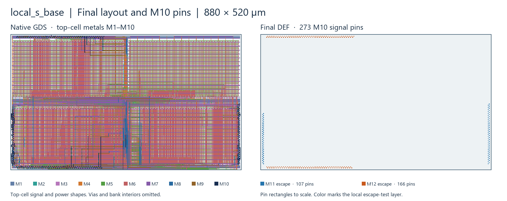
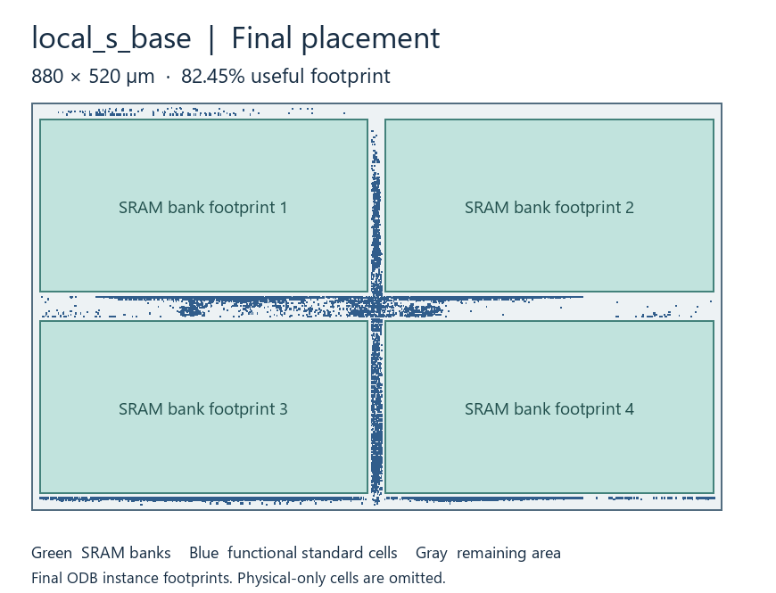
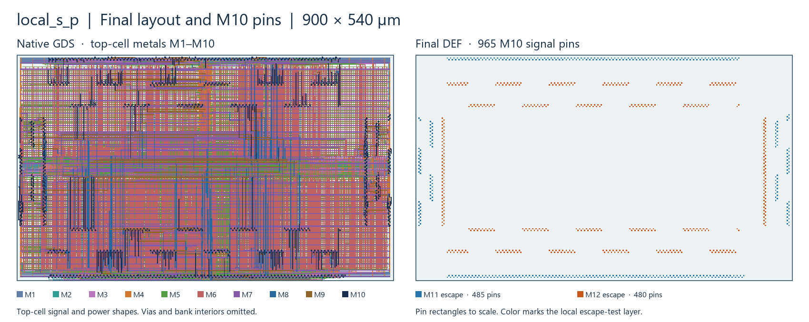
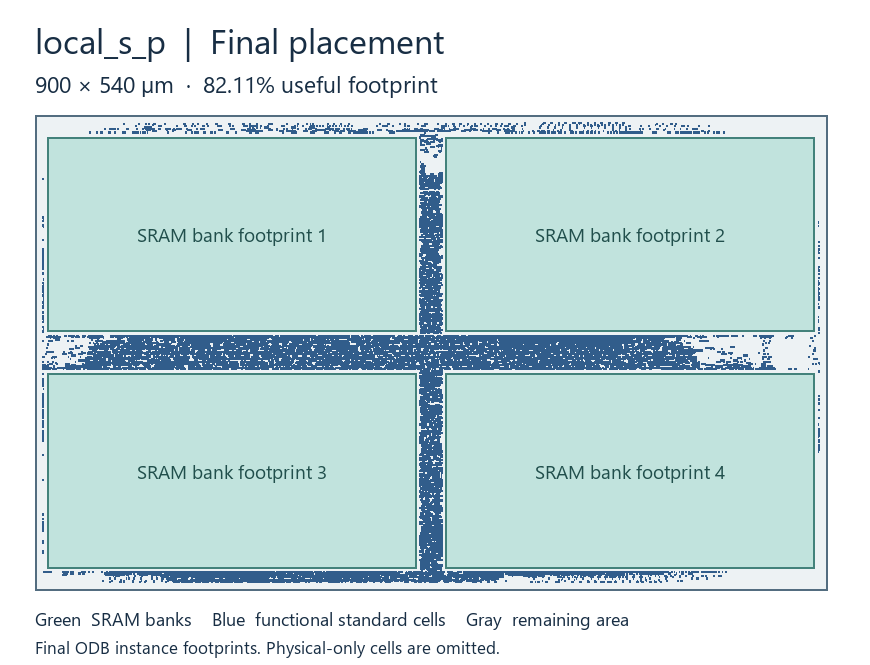

左图取自最终 GDS，显示顶层 M1–M10 信号和电源金属，省略通孔和 SRAM bank 内部图形。右图取自最终 DEF，显示 M10 信号引脚矩形。蓝、橙表示已通过的局部 M11／M12 引出试验所用的层，试验止于宏外端点。
摆放图使用最终 ODB 的实际实例外框。有效占地按整颗宏计算，计入四个 SRAM bank 和有功能的标准单元。
16 KiB · 82.45% 有效占地 · 273 个 M10 信号引脚，其中 107 个用 M11、166 个用 M12 做局部引出。


16 KiB · 82.11% 有效占地 · 965 个 M10 信号引脚，其中 485 个用 M11、480 个用 M12 做局部引出。

